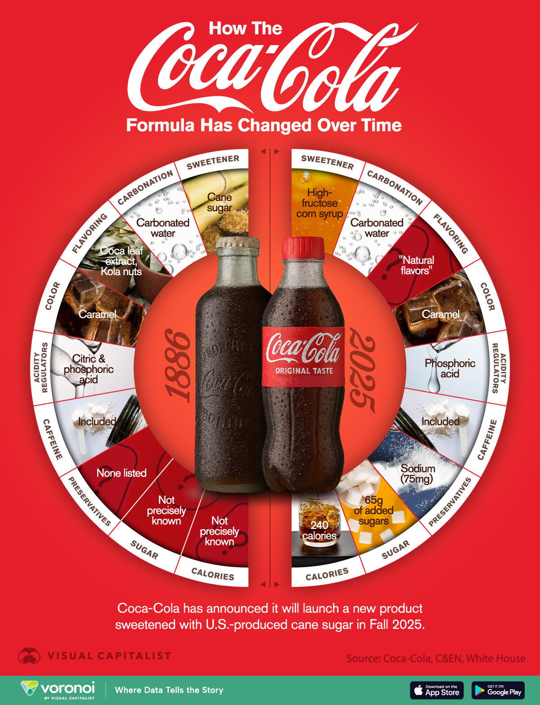

Le origini: tutto meno che buona
La Coca-Cola è stata inventata l'8 maggio 1886 ad Atlanta dal farmacista Dr. John Stith Pemberton come sciroppo medicinale. Nata come tonico per mal di testa e stanchezza, fu miscelata con acqua gassata presso la Farmacia Jacobs, venendo venduta per 5 centesimi a bicchiere. Il nome e il logo corsivo furono ideati dal contabile di Pemberton, Frank Robinson.

Perchè Coca-Cola? La ricetta "magica"
Il nome deriva dai due ingredienti principali: le foglie di coca (da cui veniva estratta la cocaina, eliminata poi nel 1903) e le noci di cola, una fonte di caffeina.

L'evoluzione e l'inizio del successo
Nel 1982, l'uomo d'affari Asa G. Candler acquistò i diritti della formula per circa $2300 e fondò la The Coca-Cola Company
Candler trasformò la bevanda in un fenomeno di massa grazie a innovative campagne pubblicitarie. Nel 1899 iniziò il modello di franchising per l'imbottigliamento.
L'iconica bottiglia, antica ma sempre attuale
La famosa bottiglia contour fu introdotta nel 1915 per differenziarsi dalle imitazioni.